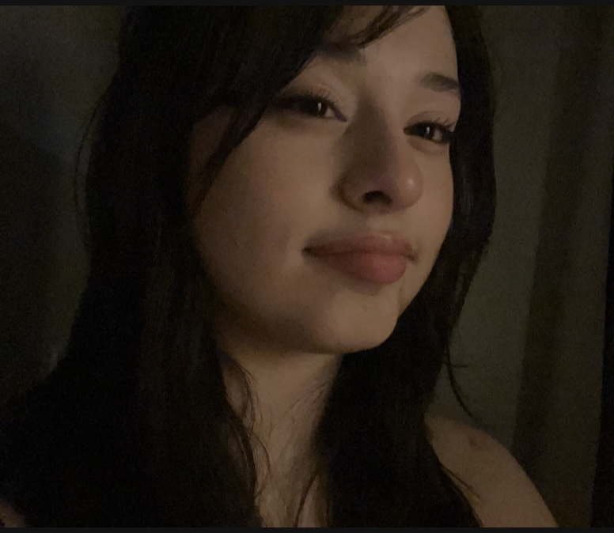

Artist Statement
Hello my name is Sophia and this is my web page! I am currently a media studies major here at Hunter concentrating on emerging media. I chose this major because I’ve always loved art and love to learn about its impact and how it changed over time. Through these courses I hope to learn how to use digital tools to create new things and learn how digital art is made. In the furture I hope I can work with different forms of art and media perhaps in a museum or studio.